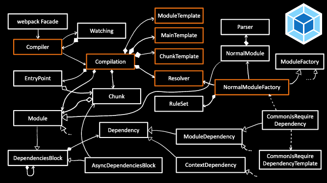

###! Webpack Modules
Whereas the `react-hot-loader` can be seen as "software" reloading mechanism, the modular system of Webpack can then be thought of as underlying "hardware". Its internal logic is very easy to understand NOT!

© [Tobias Koppers](http://docplayer.net/94651783-How-works-tobias-koppers.html)
What you see is a complex build tool that implements its own modular system. In short, it analyses source code, builds dependency trees, and puts everything together (it can also tree-shake unused code). It will always wrap source code into its own, making it a black box for everyone who doesn't get hands on its internals. The total code can then be served to the browser in chunks, but it's all tied up to Webpack's own modules.
```js
/* index.js */
const a = lib()
// becomes:
const a = Object(_lib__WEBPACK_IMPORTED_MODULE_3__["lib"])();
/* lib.js */
export const lib = () => {
console.log('lib')
}
// becomes
"use strict";
__webpack_require__.r(__webpack_exports__);
/* harmony export (binding) */ __webpack_require__.d(__webpack_exports__, "lib", function() { return lib; });
const lib = () => {
return 'example';
};
```
Both files are concatenated into a single chunk. The code above shows that the lynchpin of Webpack is `__webpack_require__` that ties together all modules in the whole of the bundle. It's quite similar to browserify that also makes use of CommonJS require method (via its [``prelude``](https://github.com/browserify/browser-pack/blob/master/prelude.js)) to make dependencies aware of each other.
But then again, when you debug, to step in an exported function from a module, you will have to make 4 clicks instead of 1:
- step in webpack module getter (4)
- step in return from module getter (3)
- step in object wrapper (2)
- *land in function call* (1)
Your debugging experience is weak and you have to set breakpoints manually in your functions, in order to step into them without this inconvenience. When source maps are *enabled*, you will be landing on random places in code like so:
To understand what's going on behind the scenes, we have to disable source maps, and check where we're really in the program. As I described above, your import will be wrapped in a getter of Webpack's module system, which in turn will be wrapped in an `Object` converter.
So not only Webpack is bulky, but it also is directly going against our developer experience. Those seconds we might have saved on hot-reload, we're now loosing when debugging our front-end applications.